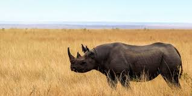

|
|
Rinoceronte Negro |
|
¿Cuáles son las características físicas del rinoceronte negro? |
||
Se estima que quedan en libertad tan sólo 5.000 rinocerontes negros. Nombre científico: Diceros bicornis. Hábitat y distribución: vive fundamentalmente en Namibia, Sudáfrica y Kenya. No es de los más grandes: mide metro y medio y puede pesar entre 700 kilos y una tonelada y media. |
 | |
Se estima que quedan en libertad tan sólo 5.000 rinocerontes negros. |
||